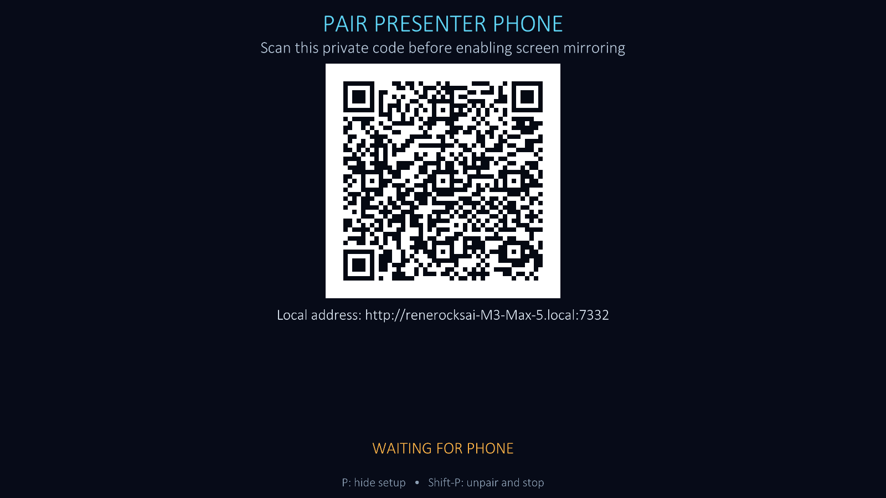
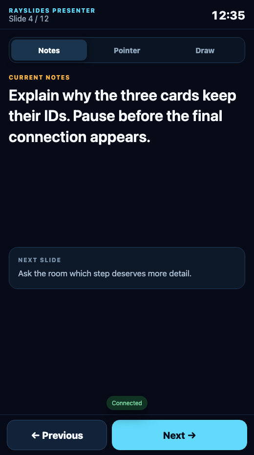
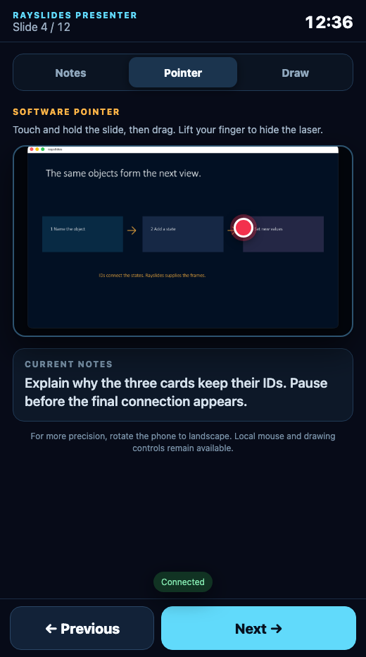
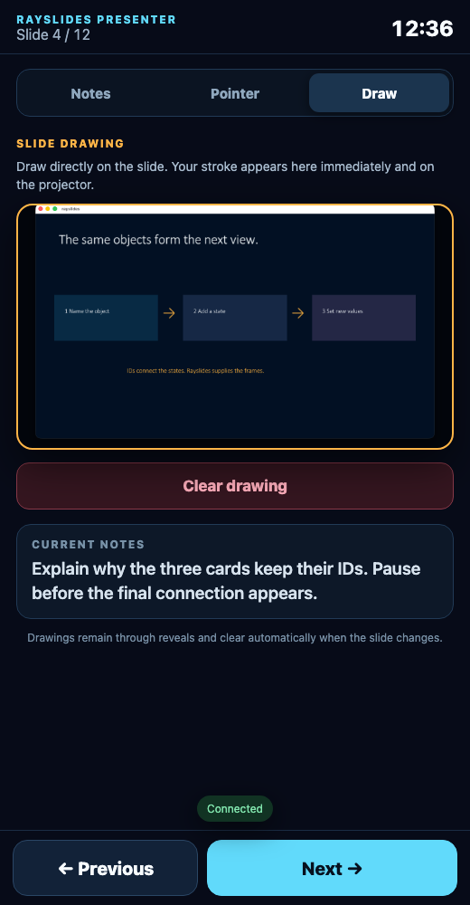

Presenter Companion
Control the presentation from your phone.
The phone shows private notes and slide controls. It connects directly to the presenting computer.
Add speaker notes
Place one notes block inside each slide.
@slide
@box text=The audience sees this text.
@notes
Open with the customer story.
Pause before the final point.
@endnotesNotes do not become slide objects. Screenshots, PDFs, and Crowdplay never include them.
Use Commands in Studio to edit the notes for the current slide.
Pair the phone
- Put both devices on one network.
A phone hotspot also works.
- Press P.
Rayslides starts the private Presenter server and shows a QR code.
- Scan the code.
The phone opens the built-in web interface. It needs no app or account.
- Press P again.
Rayslides hides the code. The paired phone stays connected.

Do not show the pairing code to the audience. Pair the phone before you enable screen mirroring.
Use the three phone modes
Notes mode

Use Notes mode when you do not need to point or draw.
Previous and Next use the same playback path as the keyboard.
They preserve reveals, transitions, and morph states.
Pointer mode

Touch and hold the preview to show the software pointer.
Move your finger to move the point. Lift your finger to hide it.
Rayslides also hides the point after a short connection loss.
Draw mode

Draw on the preview. The phone sends each stroke to the projected slide.
A drawing stays visible through reveal steps.
Rayslides clears it when the logical slide changes.
Use Clear drawing on the phone. You can also press C on the computer.
Rotate the phone to landscape when you want a larger Pointer or Draw surface. On a short landscape screen, the companion temporarily hides the header, instructions, and compact notes so the complete 16:9 surface and Clear drawing action stay above Previous and Next. Notes mode keeps its normal full layout.
Stop the Presenter server
Press Shift + P to unpair the phone and stop the server.
Pressing P only hides the setup screen. It does not end the connection.
Use a laptop companion
When you intentionally use extended displays, press L on the pairing screen. Rayslides copies the complete private companion link; paste it into a browser on the presenter laptop, then hide pairing.
At laptop-sized viewports of at least 900×600 pixels, current and next notes appear side by side. Requiring laptop-like height keeps a large phone in the phone layout when rotated to landscape. Pointer and Draw put the slide surface beside the current notes. Use ←/→, Page Up/Page Down, or Space to navigate, and 1/2/3 to switch modes.
The copied URL is private. It contains the same bearer capability as the QR code. Do not paste it into chat or a shared browser profile.
Measure the real connection
Open Connection health at the bottom of the companion during a venue rehearsal. It keeps the newest 80 samples and reports median and p95 browser-to-laptop delivery for state polling, commands, pointer updates, and drawing updates, plus failure counts. The browser sends only those bounded numeric summaries back to the local Presenter service so Showtime can verify the rehearsal; re-pairing clears them.
The report contains no notes or pairing secrets. Pointer and drawing values confirm authenticated delivery to the laptop; use a camera or observer when you need to measure all the way to projected pixels.
Choose the projector explicitly
Press D, or choose Choose presentation display from Studio Commands. Rayslides lists each active display by name, resolution, refresh rate, and desktop position. It marks the saved selection and the display containing the window, but never assumes an external screen is the projector.
Choose a row with ↑/↓, press Space to move the window there and identify it physically, then press Enter to keep it. Esc returns to the previously confirmed display. You can also click a row to identify it and click it again to confirm. If you opened the picker from fullscreen, Rayslides restores the same fullscreen mode after confirm or cancel.
Set the network address
Rayslides uses port 7332 by default. The setup screen detects active IPv4 interfaces, prefers a private physical LAN, and explains when an address is VPN, link-local, or local to the computer. Press N to cycle the available addresses.
If you change from venue Wi-Fi to a phone hotspot, Rayslides detects the new address, invalidates the old private capability, and generates a fresh QR. Scan the new code; the obsolete link cannot become valid again if you later return to that network. Opening the fresh QR in an existing Presenter tab reloads that tab with the new private session.
You can still override the advertised host and port for a policy-managed network.
zig-out/bin/rayslides talk.sld \
--presenter-host=192.168.1.42 \
--presenter-port=7332Use an explicit address when native adapter discovery cannot see the intended interface.
Use a trusted network
The QR link contains a random access code. Keep the complete link private.
Presenter Companion uses local HTTP. It does not encrypt the traffic.
Next guideRun a Crowdplay poll→